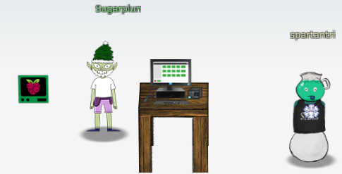

3) Point-of-Sale Password Recovery
Difficulty: 1/5
Help Sugarplum Mary in the Courtyard find the supervisor password for the point-of-sale terminal. What's the password?
ANSWER: santapass

Download the binary
Download the binary from https://download.holidayhackchallenge.com/2020/santa-shop/santa-shop.exe
Extracting the secrets
The file can be extracted using 7z e sansta-shop.exe, that will extract the following files:
app-64.7z nsExec.dll nsis7z.dll nsProcess.dll SpiderBanner.dll StdUtils.dll System.dll 'Uninstall santa-shop.exe' WinShell.dll
We extract the app-64.7z file with 7z e app-64.7z which will extract 74 files and 3 folders.
As many of the files are binary a simple grep don't get much useful but we can see that the Chormium LICENSES make cause a lof of false positives, so we make a search for strings on every file except the that searching for a password assignment in the code.
for f in $(find . -type f |grep -v LICEN); do cat $f |strings -n 20 |egrep -i "password ?= ?'" ;done
const SANTA_PASSWORD = 'santapass';
this.password = '';
ctx.password = '';
cat: ./Uninstall: No such file or directory
this.password = '';
ctx.password = '';
The constant SANTA_PASSWORD sets a hardcoded password santapass which is the challenge answer.